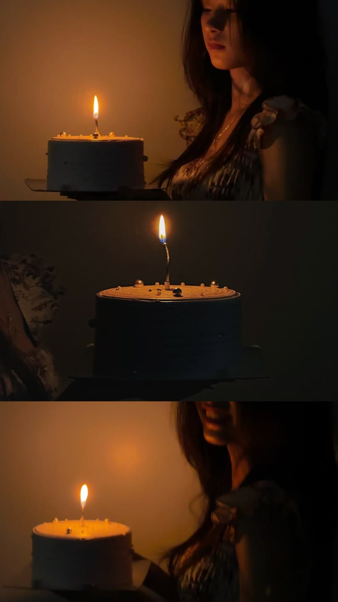
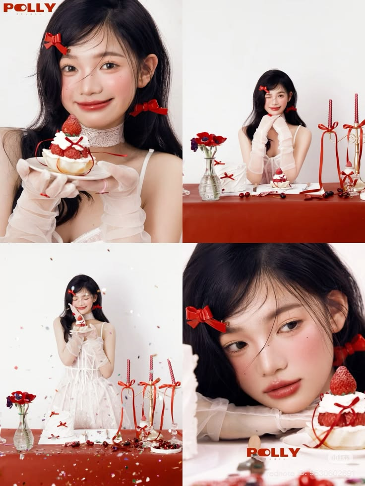
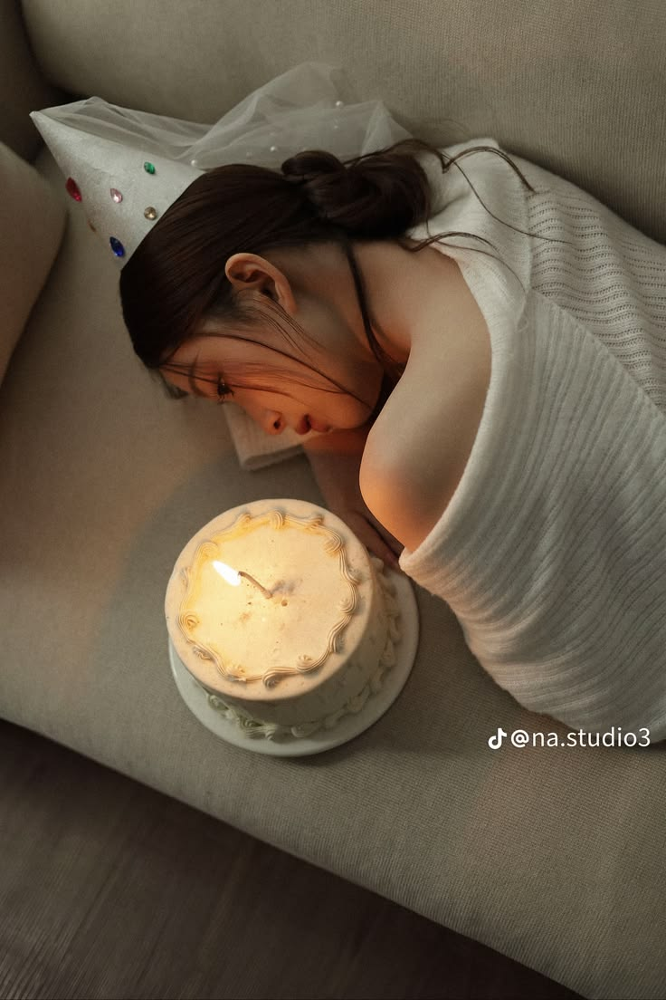
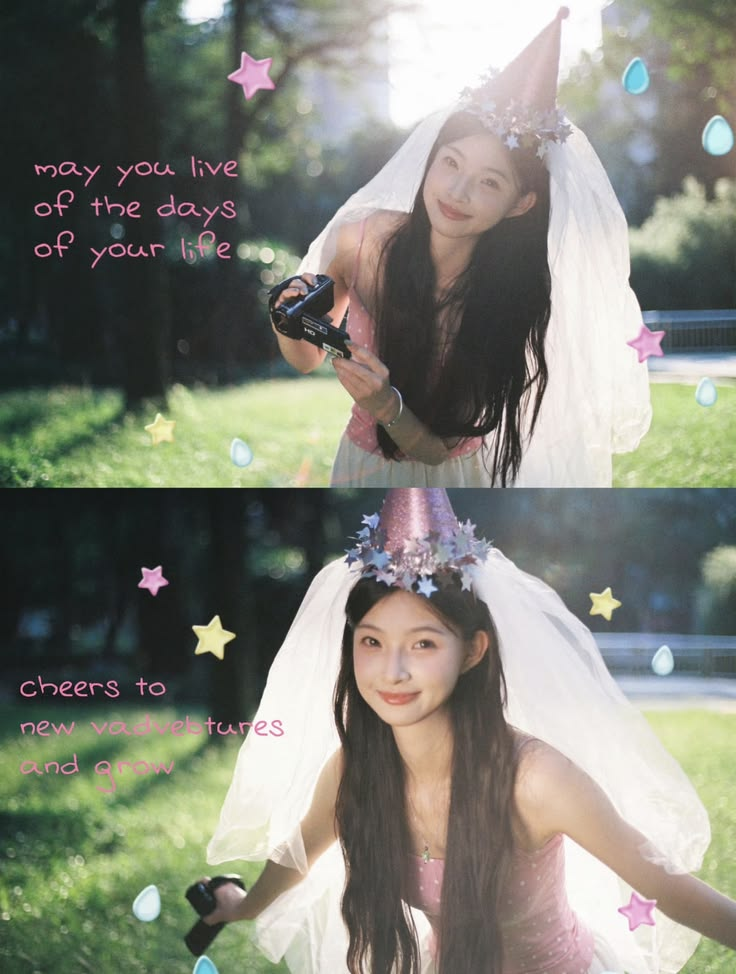
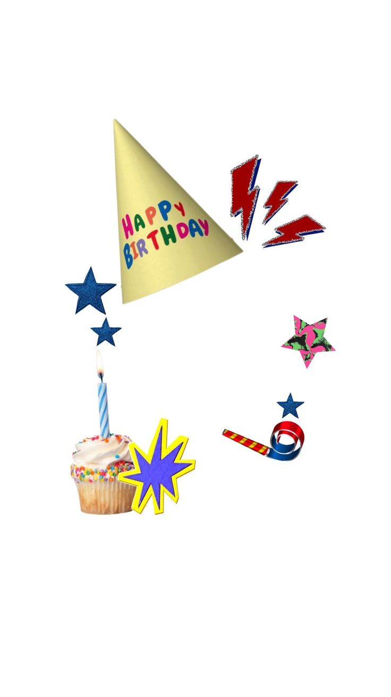
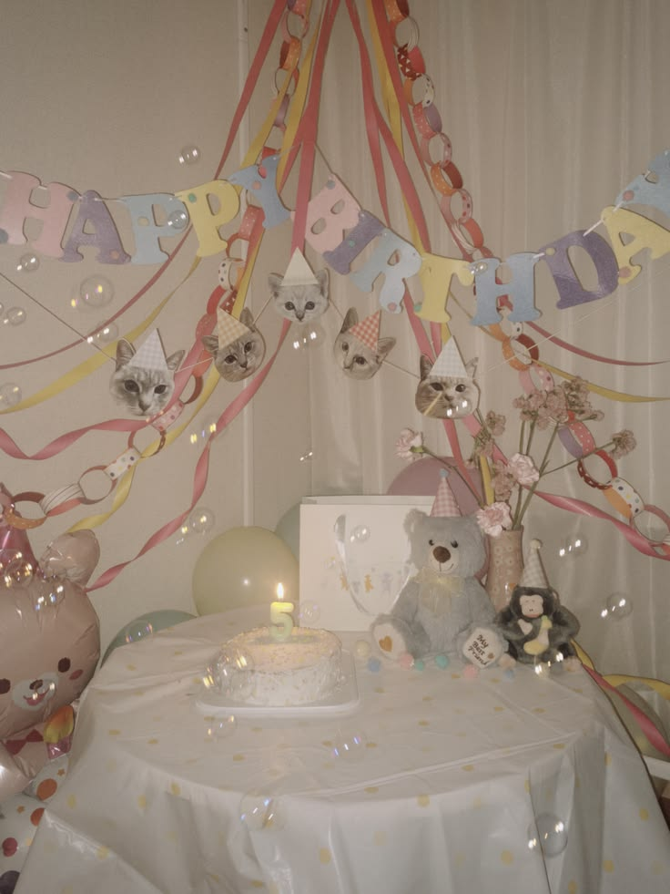

Welcome to my personal birthday photo gallery, a collection of warm and memorable moments celebrating a special milestone. Each photograph captures the cozy atmosphere, glowing candlelight, and joyful spirit of the celebration.
From quiet wishes over a birthday cake to festive outdoor portraits and pastel party decorations, these snapshots preserve the little details that made the day unforgettable.





